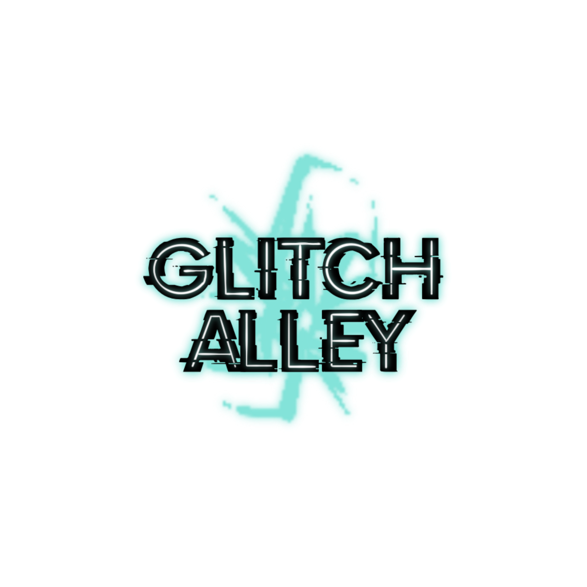
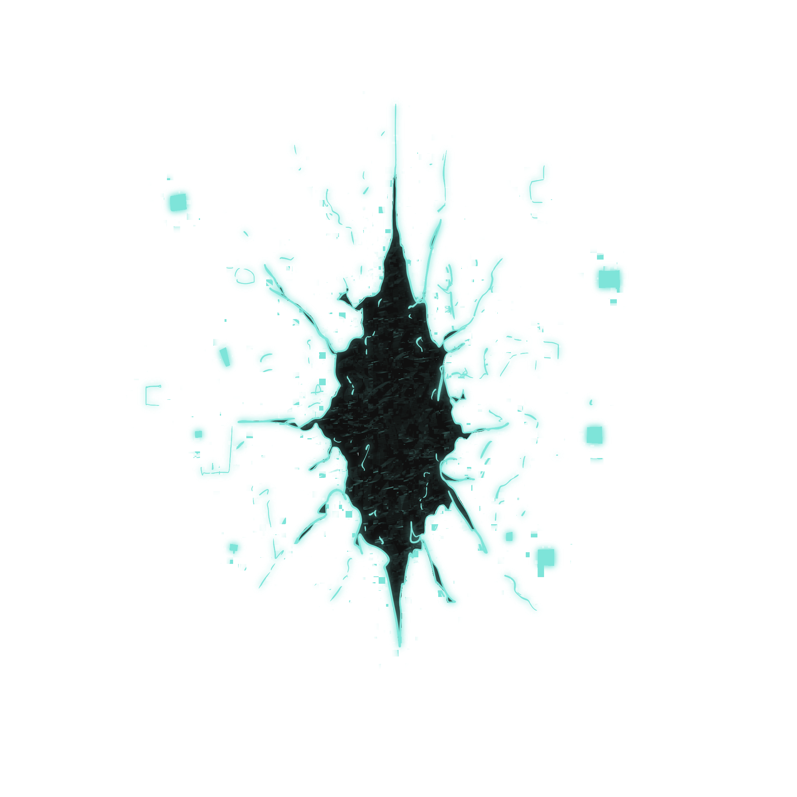
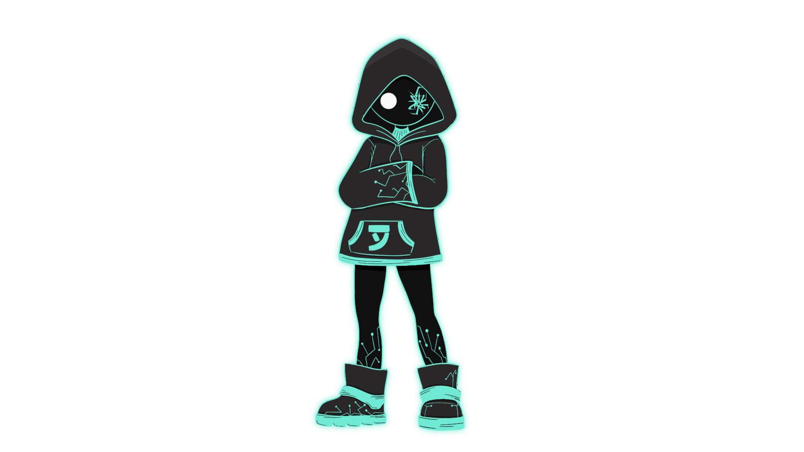

Imágenes



Glitch Alley es un videojuego de acción, aventura y exploración inspirado en el género metroidvania.
Ambientado en una ciudad digital distópica consumida por fallas conocidas como glitches, el jugador encarna a Patch, una entidad capaz de sobrevivir dentro de un sistema al borde del colapso.
Explora distritos neón, callejones ocultos y estructuras corrompidas mientras enfrentas enemigos afectados por la corrupción digital, superas obstáculos cambiantes y recolectas fragmentos de datos que revelan la historia de un mundo donde el error se ha convertido en parte de la realidad.

Recorre una ciudad digital fragmentada, encuentra rutas ocultas y recolecta fragmentos de datos para desbloquear nuevas zonas y revelar la historia detrás del colapso.
Supera plataformas inestables, caminos que desaparecen y entornos en constante cambio. Utiliza tus habilidades para manipular las fallas y seguir avanzando.
Enfréntate a entidades afectadas por el glitch mediante combate cuerpo a cuerpo. Aprende sus patrones y sobrevive a encuentros cada vez más desafiantes.

Patch es una entidad digital capaz de sobrevivir a la corrupción que consume la ciudad. Marcado por glitches y sin memoria de su origen, recorre un mundo fragmentado en busca de la verdad detrás del colapso del sistema.